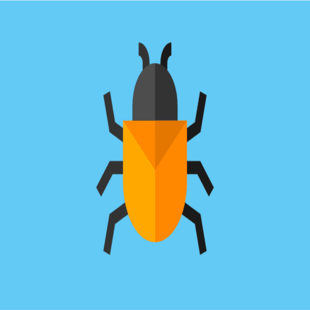

Bugs!
Summary:
During this week-long QA sprint and first half of a two-week-long feature sprint, I worked primarily on various bug fixes as we were in a bug fix sprint. I worked on UI issues, AI issues, main menu bugs, and unit bugs. Let's talk through how each of them went!
Jira Bug Task Creation:
I began the week by sifting through all of the current bugs that had been created on Jira and comparing them with the QA notes that I had taken for the week. Then, once I had identified the unique bugs, I created Jira tasks for each of them outlining a general description and steps to recreate each of them. Our second week, however, we accomplished this much more efficiently. After our squad (single-player, for me) meeting, all of the QA members met up and combined our notes, and then the QA lead, Morgan, created the Jira tasks accordingly.
Main Menu Exit Button:
This was extremely simple. We already had an exit button on the main menu, but it had no functionality. I quickly added a function that called Application.Quit() and activated it when the button was clicked. Then, I created a build of the game (as this feature cannot be tested in the Unity Editor) and tested the functionality and it worked great!
UI and Scaling Fixes:
One pretty annoying issue was the fact that the "End Turn" button was extremely difficult to click as the hitbox seemed pretty far off. To begin, I took a moment to familiarize myself with the UI system and how it was setup within the project. Then, I began modifying the values for the "End Turn" button as well as anchoring it to specific spots on the screen to no avail. Then, I began inspecting the buttons surrounding the "End Turn" button and quickly identified the problem. It turned out that the hitbox of the resource bar UI (which was directly) above the "End Turn" button) was overlapping the "End Turn" button UI, so I resized that which fixed the issue. After this, I made one minor UI change which was moving the tutorial dialogue to the bottom of the screen rather than in the center of the screen as that wasn't great for visibility.
Various Currency Issues:
There are a few ways to gain currency in-game: you begin the game with some amount of currency, you gain some amount of currency per turn always, and you gain some per city you own each turn. There were a handful of issues with this such as gaining double currency per turn as well as gaining currency at the end of the enemy's turn rather than just your own. This ended up being a bit of a time sink as I was unfamiliar with the systems that dealt with this and it turned out to be a bit harder to debug than I had anticipated. It seemed like the currency was updated in a myriad of places which made it difficult to narrow down where these issues were occurring. However, after reading the Confluence page that specifically outlined all of the ways in which currency could be gained, it gave me a bit more clarity on how I should approach this. I eventually managed to identify which currency calls were being called multiple times through trial and error and was able to fix this.
Other Minor UI Fixes:
These were extremely minor fixes, but the unit selection buttons in the UI creation menu had awkward hitboxes and they weren't very UI friendly. So, I fixed the hitboxes and added details that changed the button colors when unselected, hovered over, and selected. I also anchored the currency text correctly as it was previously slightly off.
AI Unit Overlapping Bug
Prior to this, I had no experience working with the AI systems in our codebase, so this ended up taking a bit longer than I had originally planned. So, I began by reading through the AI scripts and familiarizing myself with the workflow of the entire thing. My initial thinking was that since this was only happening with AI units and not player units, that some check was in place to prevent player units from moving to occupied tiles, but this check was not in place for AI units. This ended up being a dead end that I wasn't able to figure anything out with. Then, I thought that there may be an issue with the fact that the AI was able to move all of its units concurrently, so maybe two units would decide to move to the same tile at once. However, I looked into this and noticed that the end tile for a unit was immediately set to occupied upon the beginning of their movement, so this couldn't be the issue.
After this, I began looking for more issues in the five, AI strategy scripts, specifically the ones that told the AI to move units around. I tried to just simply add a check to the desired movement tile before moving to it in each of these scripts which seemed to work, but caused the AI to stall randomly and sometimes indefinitely. I attempted to debug this and noticed that the AI was calling certain strategies repeatedly. I contacted our programming department lead, Nikhil, as he was the one who wrote the AI scripts and told me that in addition to adding this check, I should also set the "moved" bool of the unit to true as this was why the AI kept continuously calling the same strategy - it would only stop once it thought it had moved. I did this and it fixed the issue!
Unit Attack Button Requiring Two Clicks
As you can see, the defending unit still has 100/100 health after the first "attack", but it decreases correctly to 70/100 after the second attack.
Initially, this bug was presented as only affecting the archer unit which threw me off when beginning my bug fix work. I began by looking at the archer unit type scriptable object and comparing it to the other unit type scriptable objects as I couldn't understand why this would only be happening with the archer and no other units. I didn't see any meaningful differences that could be causing this, so I tried making minor changes just to make sure and wasn't able to narrow the issue down this way. Then, I began looking into the Unit script which is currently over 700 lines long, so it took a bit to understand. However, there was nothing specific to archers in this script, so I searched throughout the entire codebase for scripts that were specific to the archer and couldn't find any. Then, I realized that this issue could be recreated with any unit, not just archers.
From there, I went back into the editor and began debugging once again. There were some poorly named variables in the Unit class which made things a bit difficult, but I noticed a "selected" bool which ended up being where the issue was located. When you click on a unit, the "selected" bool is set to true, however, after moving the unit, the selected value of that unit was set to false, but this was not updated visually. So, if you tried to attack a unit without re-selecting the unit, then a non-selected or null unit would attack the defending unit which would require the player to re-click on the unit and attack again. To fix this, I set the "selected" bool to true after unit movement which keeps them selected for attacking immediately after.
Two Week Time Breakdown:
- Studio Meetings: 4.5 Hours (thirty-minute, separate QA meeting after the second studio meeting)
- Studio Communication & Documentation Reading (Confluence): 1.5 Hours (UI/UX meeting & Codex documentation)
- Jira Bug/Task Identification & creation: 1 Hour
- Main Menu Exit Button: 0.5 Hours
- UI Fixes (end turn button & tutorial dialogue box): 1 Hour
- Currency Fixes: 2.5 Hours
- More UI Fixes (unit creation UI & currency text): 0.5 Hours
- AI Unit Overlap Bug: 3 Hours
- Attack Button Issues: 2.5 Hours
- Familiarizing myself with more aspects of the game (I had really only been focusing on my parts of the game, so I played a few games to get a better idea of the entire thing): 1 Hour
- Total: 18 Hours